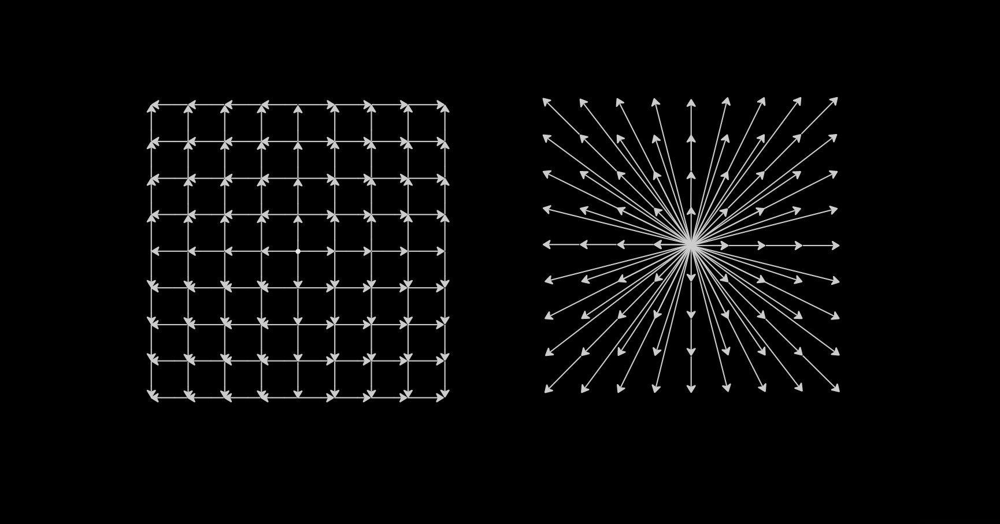
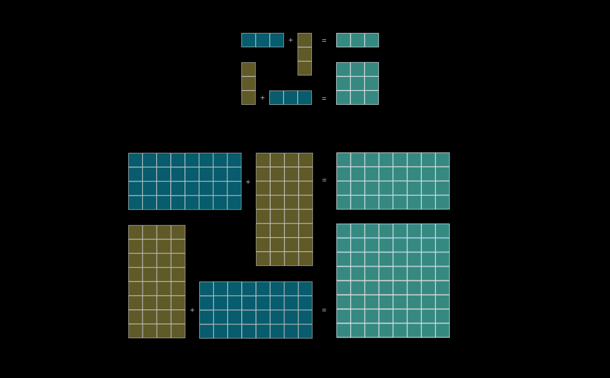

Linear Algebra
A vector can best be thought of as movement through space. We can perceive the unit vector in one dimensional space \( \>\> \hat{i} = \begin{bmatrix} 1 \end{bmatrix} \>\> \); as a movement from zero to one.
The set of all possible vectors created by the addition/subtraction of this unit vector is simply the number line in one dimensional space: \[ \{ \> \begin{bmatrix} x \end{bmatrix} \> \mid \> \begin{bmatrix} x \end{bmatrix} = a \cdot \hat{i},\>\> a \in (-\infty, \infty) \> \} \>\>\>\> = \>\>\>\> \{ \> \begin{bmatrix} x \end{bmatrix} \> \mid \> x \in (-\infty, \infty) \} \> \]
With two non-parallel unit vectors \( \>\> \hat{i} = \begin{bmatrix} 1 \\ 0 \end{bmatrix} \>\> \) and \( \>\> \hat{j} = \begin{bmatrix} 0 \\ 1 \end{bmatrix} \>\> \) we have the following:

This pattern extends to any \(n\)-dimensional space: the span of \(n\) non-parallel vectors produces an \(n\)-dimensional lattice structure. Two vectors are parallel if, when sharing the same origin, one is a scalar multiple of the other. A linear combination of two vectors is the sum of those two vectors scaled, \( \>\> a \vec{v} + b \vec{w} \). The span of a set of non-parallel vectors is the set of all linear combinations they produce.
A set of \(k\) vectors has the property of 'linear dependence' if there exist scalars \( \> a_1, a_2, \dots, a_k \> \) such that \(a_1v_1 + a_1v_2 + \dots + a_kv_k = 0 \>\>\) excluding the trivial case where all scalars equal zero. It follows that 'linear independence' is simply the non-existence of such a set of scalars.
A linear transformation is a mathematical function that takes a vector space as input and produces a vector space as output, whilst maintaining vector addition and scalar multiplication.
For any vector \(\vec{v}\) that exists as a linear combination of \(k\) base vectors, \( \>\> \vec{v} = a_1 \hat{i_{1}} + a_2 \hat{i_{2}} + \dots + a_k \hat{i_{k}} \>\> \) the transformed vector exists as the sum of the transformed base vectors \[ T\left(\begin{bmatrix} x_1 \\ x_2 \\ \vdots \\ x_n \end{bmatrix} \right) = x_1 T(\hat{i_1}) + x_2 T(\hat{i_2}) + \dots + x_n T(\hat{i_n}) \]
Matrix operations give us a more intuitive view of this functionality, where the matrix acts as the function that transforms the input vector space into a given output vector space: \[ \begin{bmatrix} \hat{i}_{0,0} & \hat{i}_{1,0} & \dots & \hat{i}_{n,0} \\ \hat{i}_{0,1} & \hat{i}_{1,1} & \dots & \hat{i}_{n,1} \\ \vdots & \vdots & \ddots & \vdots \\ \hat{i}_{0,n} & \hat{i}_{1,n} & \dots & \hat{i}_{n,n} \end{bmatrix} \begin{bmatrix} x_1 \\ x_2 \\ \vdots \\ x_n \end{bmatrix} = \vec{v} \] By doing so, each dimension in the input vector is transformed by the transformation applied to its corresponding base vector, visualised as follows: \[ x_1 \begin{bmatrix} \hat{i}_{0,0} \\ \hat{i}_{0,1} \\ \dots \\ \hat{i}_{0,n} \end{bmatrix} + x_2 \begin{bmatrix} \hat{i}_{1,0} \\ \hat{i}_{1,1} \\ \dots \\ \hat{i}_{1,n} \end{bmatrix} + \dots + x_n \begin{bmatrix} \hat{i}_{n,0} \\ \hat{i}_{n,1} \\ \dots \\ \hat{i}_{n,n} \end{bmatrix} = \vec{v} \]
Observe that using matrices as a means of transforming one vector space into another is equivalent to transforming the base vectors at every conceivable origin point in space. This creates the beautiful visual image of space squeezing, stretching, contracting, expanding and rotating.

Above is a way to perceive matrix multiplication geometrically, which scales to any two matrices in space so long as both have a dimension of equal length.
The 'determinant' of a linear transformation is the change in any unit volume within the vector space. A negative determinant indicates an odd number of base vectors 'flipped' in terms of orientation. By treating the borders of a complex structure in our vector space as the integrals of a set Note that the change in volume of a more complex structure can be determined by the determinant by treating the borders of the structure down into unit volumes